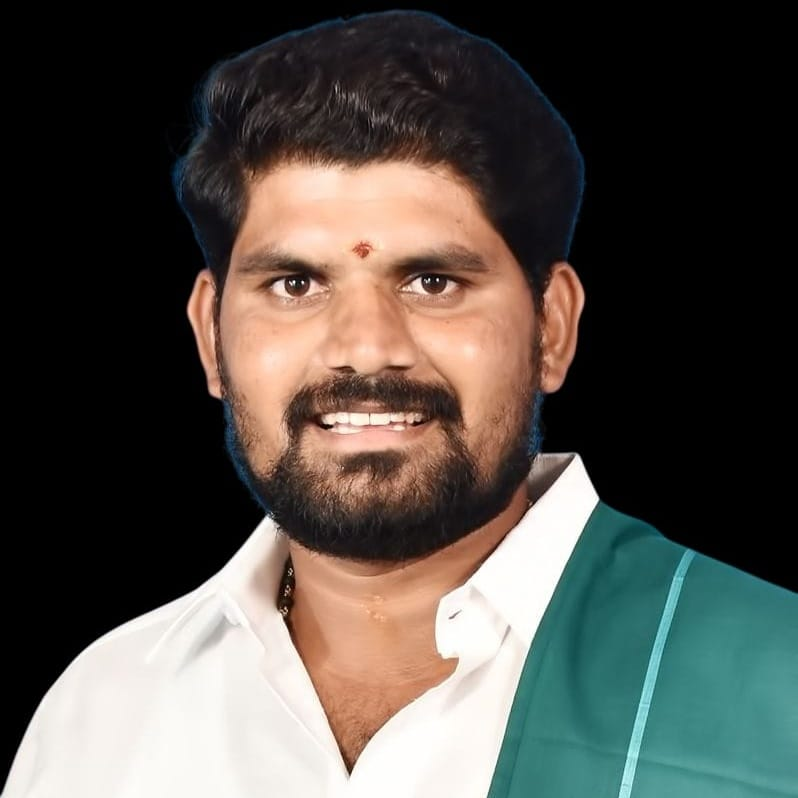

இயற்கையோடு ஒன்றி
நிலையான வாழ்வை உருவாக்குவோம்.
📍 கீரனூர் | 12-ஏக்கர் பண்ணை
இயற்கை வேளாண் பயணத்தின் தொடக்கம். ஆடு, மாடு, கோழி, பன்றி ஒருங்கிணைந்த பண்ணையாக மாற்றி நெல், காய்கறி, வேர்க்கடலை ஆகியவற்றை இயற்கை இடுப்பொருட்கள் மூலம் அறுவடை செய்து கள அனுபவம் பெற்ற இடம்.
📍 முன்னாள் MLA அவர்களின் பண்ணை
பசுமைக்குடில்களில் காய்கறி சாகுபடி, 100-க்கும் மேற்பட்ட மாடுகளுக்கான நாட்டு வைத்தியம் & தீவன மேம்பாடு மூலம் பால் உற்பத்தியை அதிகரித்தல், கோழி மற்றும் வாத்துப் பண்ணை அமைத்தல்.
📍 கோவை, தஞ்சாவூர், கோபி, திருவண்ணாமலை | 90-ஏக்கர்
4 மாதிரி பண்ணைகளில் உழவில்லா வேளாண்மை, கலப்புப் பயிர், கரும்பு, மஞ்சள், நெல் சாகுபடி மற்றும் மழைநீர் சேகரிப்புக்கான மாதிரி பண்ணை வடிவமைப்பு பணிகள்.
📍 580-ஏக்கர் பிரமாண்டப் பண்ணை
1000+ பணியாளர்களின் உணவுத் தேவையைப் பூர்த்தி செய்யும் வகையில் 120-ஏக்கர் நெல்/சிறுதானியங்கள், 350-ஏக்கர் மரப்பயிர்கள், 300-ஏக்கர் மேய்ச்சல் நிலம் மற்றும் விவசாயிகளுக்கான ஒரு மாத களப்பயிற்சிகள்.
ஈஷா இயக்கம் மூலம் இயற்கை இடுப்பொருள் தயாரிப்பு & பயிர் சாகுபடி பயிற்சி பெற்றவர்கள்.
மகேந்திரா NAANDI Foundation வழியாக Regenerative Agriculture பயின்ற கல்லூரி மாணவர்கள்.
தூத்துக்குடி மாவட்ட ஆட்சியர் அலுவலகம் சார்பில் இயற்கை விவசாயப் பயிற்சி.
தாவரவியல் & விலங்கியல் கல்லூரி மாணவர்களுக்கு Food Safety & Natural Farming வகுப்புகள்.
இயற்கை வேளாண்மையை ஊக்குவிப்பதும், அதை அடுத்த கட்டத்திற்கு எடுத்துச் செல்வதுமே எங்களின் முதன்மை நோக்கமாகும். அதற்காக, விவசாயிகள் எளிதாக இயற்கை விவசாயத்திற்கு மாற உதவும் வகையில் சிறந்த பண்ணை வடிவமைப்புச் சேவைகளை வழங்குகிறோம். அத்துடன் நின்றுவிடாமல், இயற்கை முறையில் அர்ப்பணிப்புடன் விளைவிக்கப்பட்ட தரமான உணவுப் பொருட்களை நேரடியாக மக்களிடம் கொண்டு போய் சேர்க்கும் விற்பனை மையமாகவும் செயல்படுகிறோம். இதன்மூலம் ஐயா நம்மாழ்வார் அவர்களின் கனவுபடி தமிழகத்தை விரைவாக முழுமையான இயற்கை வேளாண்மை செய்யும் மாநிலமாக மாற்றுவதற்கான பணியினை தொடர்கிறோம்.
2030 ஆம் ஆண்டுக்குள் 10000 -ஏக்கர் பரப்பளவில் இயற்கை வேளாண் மாதிரி பண்ணைகளை உருவாக்க வேண்டும் . 1-லட்சம் விவசாயிகளுக்கு இயற்கை வேளாண்மை பயிற்சி அளிக்க வேண்டும் .

Experience: கடந்த 8 ஆண்டுகளுக்கும் மேலாக இயற்கை உழவாண்மை, தொலைநோக்குடனான வேளாண் பண்ணை வடிவமைப்பு மற்றும் ஒருங்கிணைந்த ஆடு, மாடு பண்ணை வடிவமைப்பு மற்றும் பராமரிப்பில் தொடர்ச்சியான பட்டறிவும் நிபுணத்துவமும் கொண்டவர்.